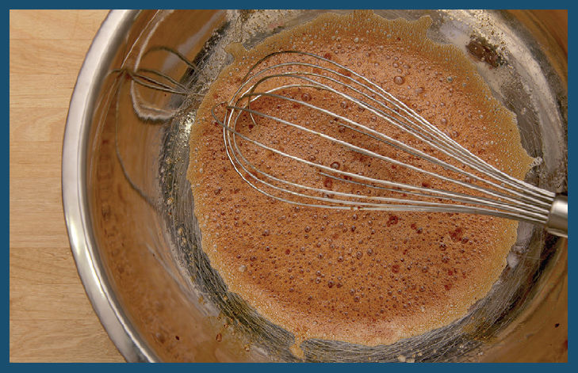
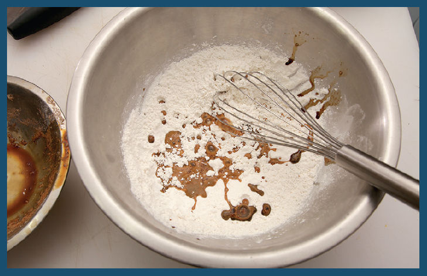
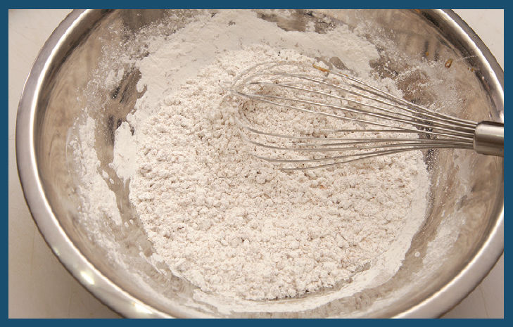
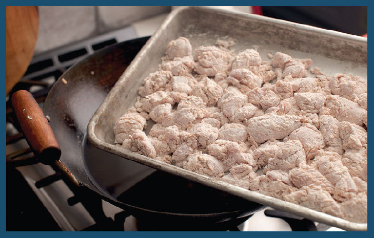
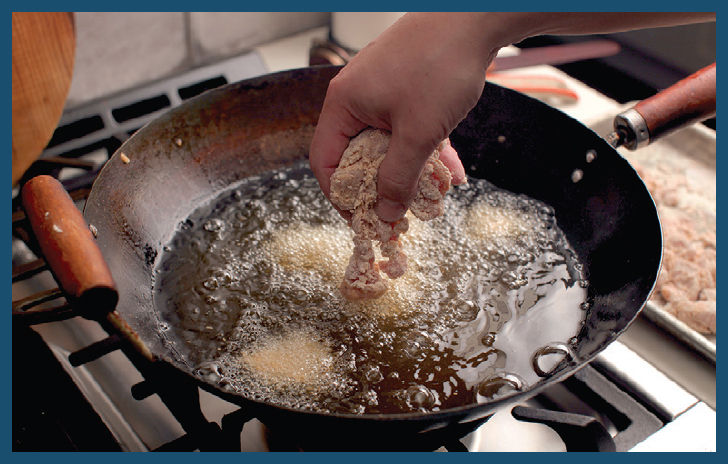
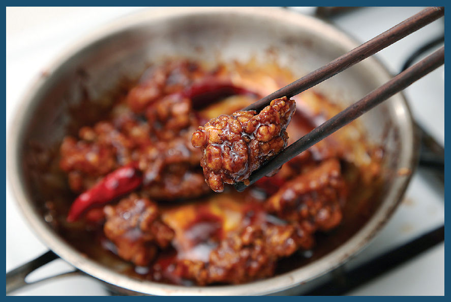

Extra-Crispy Fried Chicken or Beef for Chinese American Dishes, Step by Step
I had the general in my crosshairs; all that was left to do was pull the trigger. With just a bit of tweaking and streamlining, here’s where we end up, step by step. The same process works for any dish where fried nuggets end up tossed in a thickened sauce, such as General Tso’s or orange peel beef. Only the flavors in the marinade change slightly.
Step 1 • Mix the Marinade

I start with a marinade of an egg white mixed with a couple tablespoons of dark soy sauce, a couple tablespoons of Shaoxing wine, and a couple tablespoons of vodka.
Step 2 • Marinate the Meat

After setting aside half the marinade (I’m going to use it to moisten up my dry coating later on), I add 3 tablespoons of cornstarch, ¼ teaspoon of baking soda (no need for baking powder here, as the wine adds the acidic element that reacts with the soda), and a pound of chicken (or beef, shrimp, tofu, etc.), tossing it all with my fingers until the chicken is thoroughly coated.
At this stage you can refrigerate the meat for up to a few hours, or you can plow straight through the rest of the recipe with a shortened marinating period. It makes very little difference.
Step 3 • Combine the Reserved Marinade and the Dredging Mixture

Next up, I add that reserved marinade to my dry ingredients: ½ cup each of flour and cornstarch, along with ½ teaspoon of baking powder and ½ teaspoon of salt.
Step 4 • Mix and Form Crumbles

I mix it all together with my fingertips or a whisk. At this stage the mixture should look coarse and crumbly, with a few big nuggets of the flour-marinade mixture.
Step 5 • Add the Meat and Coat

With the dry mix made, I add the chicken. You can just dump all the chicken in and then work on carefully separating and coating each piece in the mixture, pressing firmly so that it adheres (you will get messy hands using this method), or you can use my preferred method, which takes a bit more practice: Holding the dry mix in one hand and tossing constantly, drop individual pieces of chicken in one by one with your other hand. As you toss, the chicken pieces should all get individually coated.
Step 6 • Deep-Fry

All of the normal caveats about deep frying hold true here: use a thermometer to regulate temperature (350°F/175°C was the right temperature for this application), add pieces one at a time and gently lower them into the hot oil (don’t drop them!), and keep things moving so that they fry rapidly and evenly, which in turn will help them get crisper faster.
Once they are crispy and cooked through (about 4 minutes or so), you can drain them and toss them with your sauce, or if you want even better results, drain them, let them cool completely (they can be stored up to a few days uncovered in the fridge), then fry them a second time at 375°F (190°C) just until they recrisp, about 2 minutes.
They get crisp. I mean CRISP. You could take those double-fried nuggets to the beautiful Mount Airy Lodge in the Poconos, dance into the night with them, relax in a heart-shaped jacuzzi, share a bottle of Champagne, cuddle up next to the fire, and fall asleep with them in your arms, and they’ll still be crispy the next morning. (Not that I’ve actually tested this.)
Step 7 • Toss with the Sauce
Since your wok will be occupied with the deep fry, you can stir-fry secondary ingredients and premix your sauce before the frying process, then finish everything by tossing it all together in a saucepan or skillet on a second burner as soon as your crispy nuggets are finished frying.
It takes a bit of work to get the sauce to coat every surface, but you will be rewarded when all’s said and done. Greatly rewarded.
